Home · ação, slogan e papel

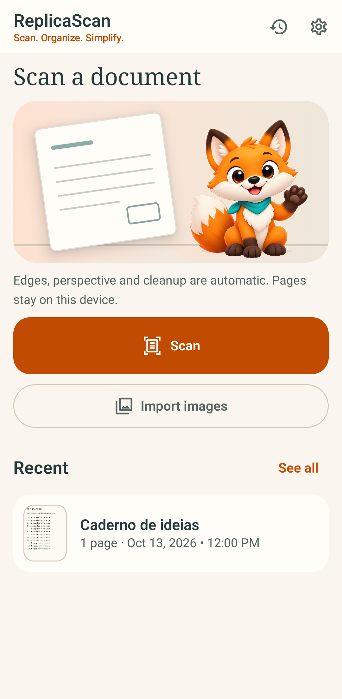
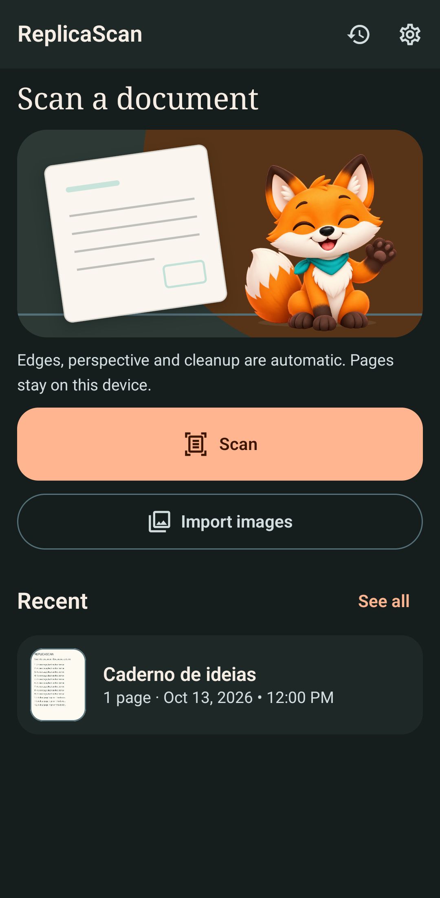
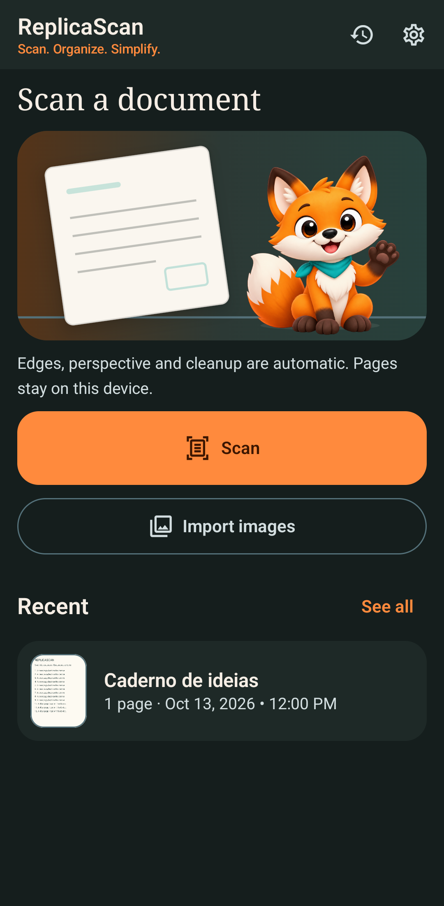
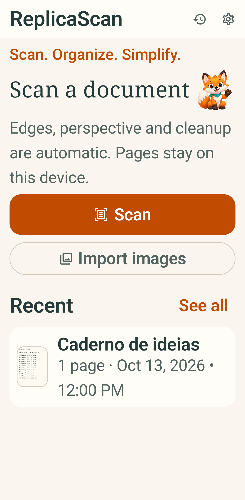
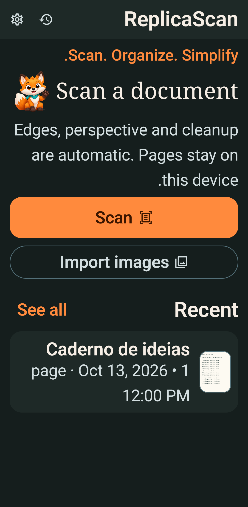
Capturas do APK nativo no emulador Pixel 7/API 34 com documento sintético e estados injetados. “Antes” é a captura versionada da rodada anterior; “Agora” vem da recuperação de 14/10. Isto permite comparar composição, não comprova scanner, OCR ou exportação ponta a ponta. As fotos privadas do WhatsApp informaram o diagnóstico e não foram copiadas para o repositório.
Ícone teal em máscaras e 24–108 dp · Cor e critérios · Estado da mascote






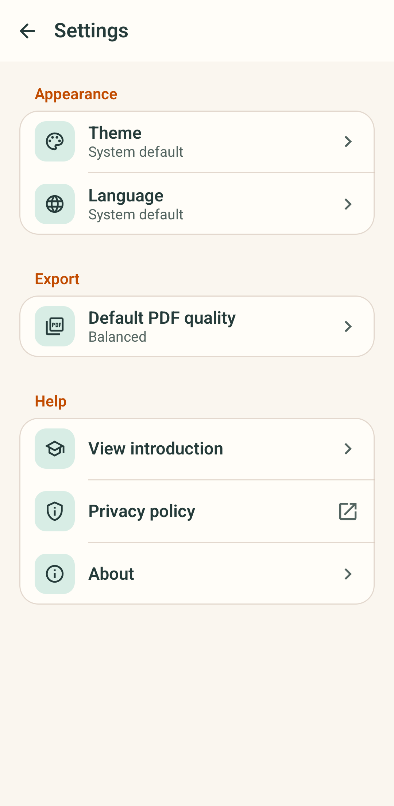
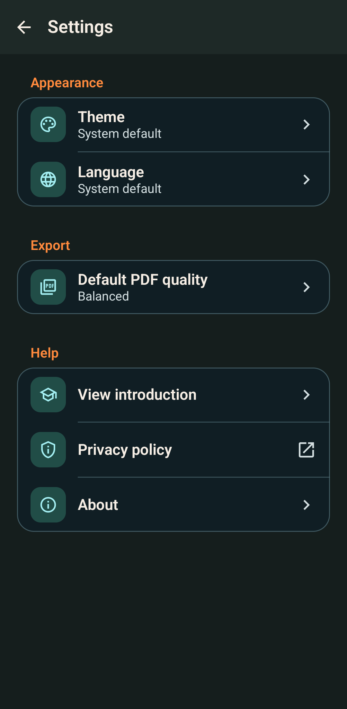
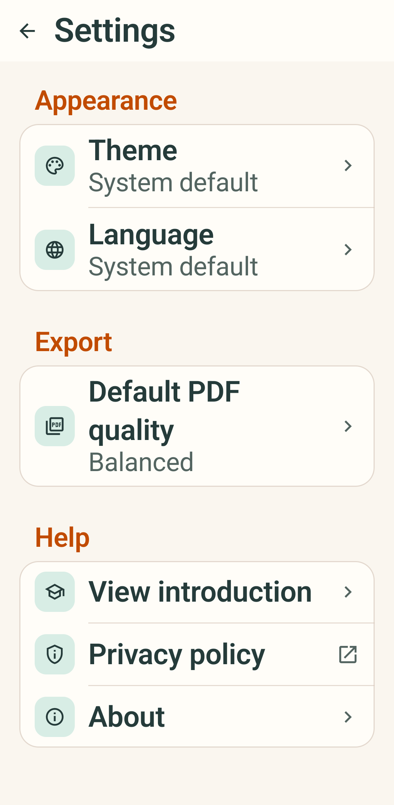

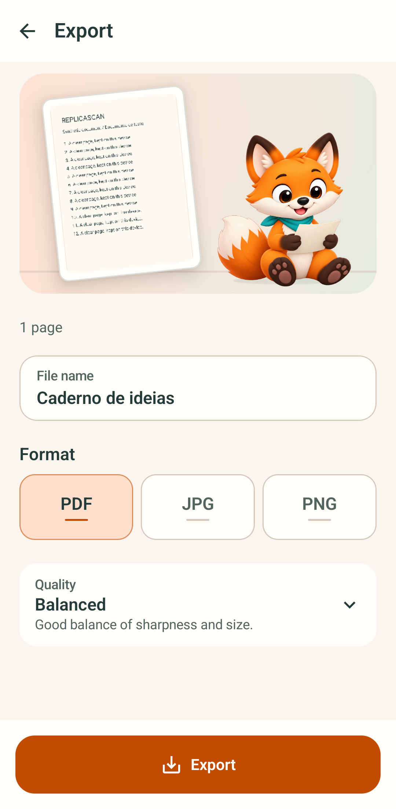

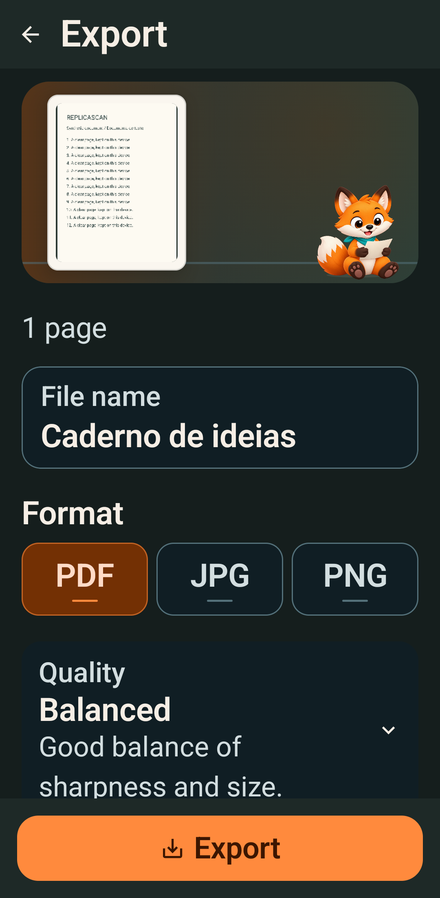
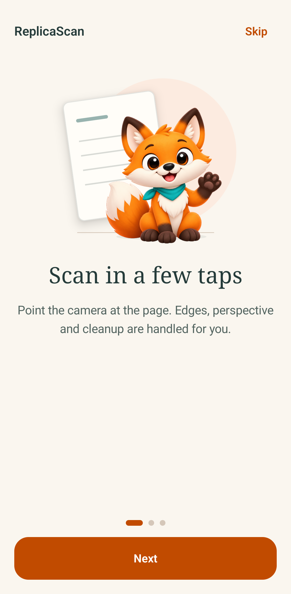
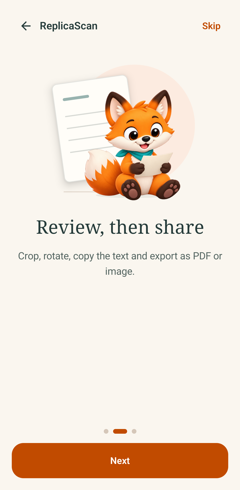
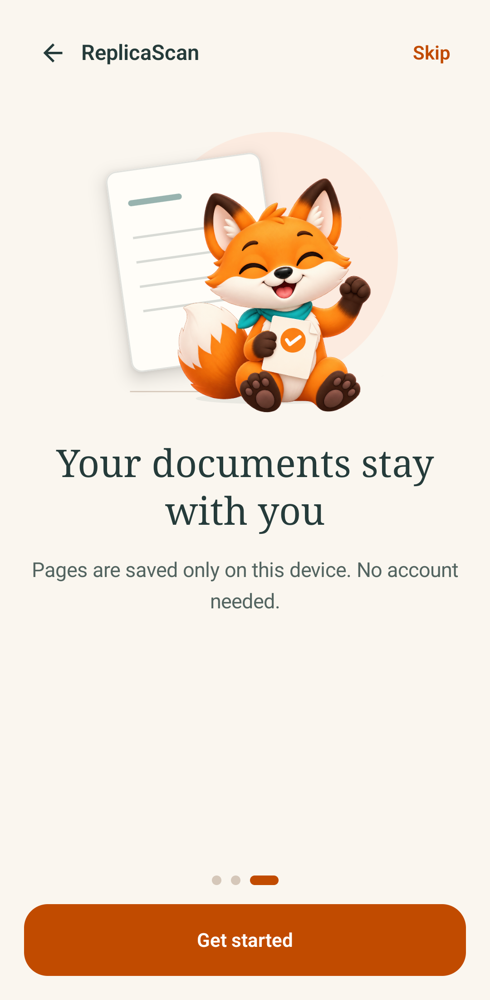
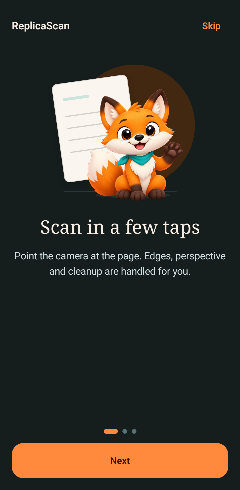
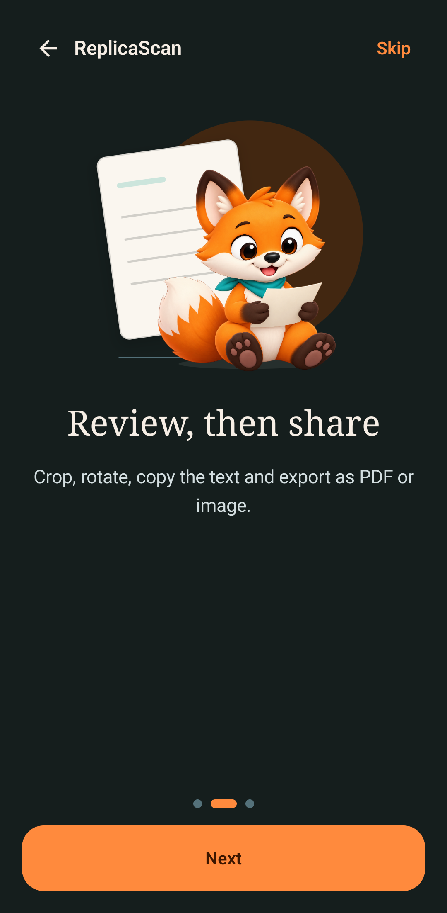
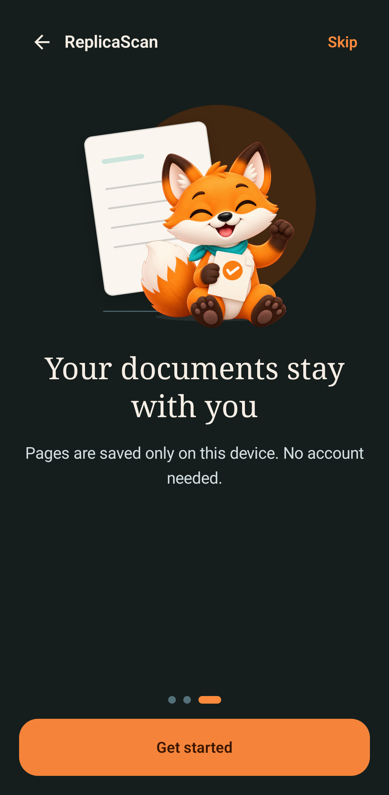
Captura contínua do emulador API 34. A cadência gravada foi baixa; estes vídeos não aprovam fluidez nem rig articulado.
O rig independente, a fluidez em aparelho físico, TalkBack e fluxo real ainda não estão qualificados. Não há tag ou release v0.4.1.